| Número de Redes | Logotipo | Nombre de la Red | Acrónimo de la Red | Breve descripción de la red (objetivo general) | Persona de contacto en Ikiam | |
| 1 | 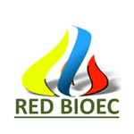 |
Red de Biodigestores de Ecuador | RedBioEC | La Red de Biodigestores del Ecuador (RED BIOEC), nacida en 2015, es un espacio para compartir experiencias e información al rededor de la tecnología de los Biodigestores en Ecuador. |
Jaime Martí Herrero | jaime.marti@ikiam.edu.ec |
| 2 | 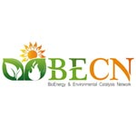 |
Bioenergy & Environmental Catalysis Network 15 | BECN15 | Desarrollar conocimientos y tecnologías necesarias para dar soluciones sostenibles y accesibles a la sociedad en el ámbito de la valorización de la biomasa, para su aprovechamiento energético, fisicoquímico, biológico, agrícola y ambiental, bajo el enfoque del desarrollo sustentable de la región amazónica del Ecuador. |
Yanet Villasana | yanet.villasana@ikiam.edu.ec |
| 3 | 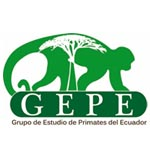 |
Grupo de Estudio de Primates del Ecuador | GEPE | No es una red como tal pero si está anexo a una asociación. El GEPE tiene como misión fomentar el desarrollo de la Primatología en el Ecuador, a través de la investigación científica así como de la cooperación y trabajo entre organizaciones e investigadores que aporten al desarrollo de estrategias que promuevan la protección de los ecosistemas donde habitan las especies de primates ecuatorianas. Nuestra visión es fortalecer y contribuir a los conocimientos de la sociedad civil y demás organizaciones interesadas en la conservación de la biodiversidad, fundamentando la importancia del desarrollo de estudios e investigaciones que aporten a la protección y conservación de las especies silvestres y su hábitat en el país. |
Sara Álvarez Solas | sara.alvarez@ikiam.edu.ec |
| 4 | 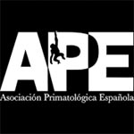 |
Asociación Primatológica Española | APE | La APE apuesta por ser el lugar de encuentro de primatólogos, investigadores y estudiantes interesados en la Primatología. Aunque su ámbito de acción se centra en España, mantiene una relación especial con la Asociación Portuguesa de Primatología así como con otras instituciones nacionales e internacionales. Una de las labores principales de la APE es la oganización de congresos, cursos, conferencias y campañas, con el objetivo de intercambiar experiencias en nuestro ámbito de trabajo, fomentar el contacto entre investigadores, así como transmitir la importancia de la conservación y protección de los primates tanto entre el colectivo de científicos como en la sociedad civil en general. |
Sara Álvarez Solas | sara.alvarez@ikiam.edu.ec |
| 5 | 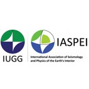 |
Latin American and Caribbean Seismological Commission | LACSC | The IASPEI "Latin American and Caribbean Seismological Commission" was proposed during a Seismology Symposium held in Lima, Peru, in September 2012, and was formally approved by the IASPEI Council in its General Assembly held in Gothenburg in July 2013. The LACSC mission is to promote the science of Seismology in Latin America and Caribbean by encouraging research studies, by extending and enhancing scientific co-operation and by facilitating training of young scientists. The organization of the biannual IASPEI Regional Assembly is one of its main tasks. |
Sebastián Araujo Soria | jose.araujo@ikiam.edu.ec |
| 6 | 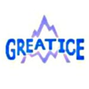 |
Glaciares y Recursos Hídricos en los Andes Tropicales: Indicadores de los Cambios Ambientales | LMI GreatIce | Este LMI es una estructura de investigación y de formación fundada en una cooperación de excelencia que existe desde hace mucho tiempo entre el IRD y un grupo de instituciones andinas. El LMI GreatIce está formado por investigadores e ingenieros por la parte francesa y por la parte andina. Estos últimos pertenecen a 6 instituciones distintas, universidades e institutos de investigación. GreatIce se trata de un sistema de observación permanente de glaciares creado por el IRD y sus contrapartes a partir de los años 1990, que se extiende desde Bolivia y Perú hasta Ecuador. Este observatorio provee continuamente datos de referencia sobre el cambio climático en los Andes tropicales y sobre la evolución de los recursos hídricos. Pertenece a la red del Sistema francés de Observación y Experimentación para la Investigación Ambiental (SOERE) GLACIOCLIM. GLACIOCLIM está certificado por el INSU (Institut national des sciences de l'Univers ) y el Ministerio de Investigación de Francia. Su presencia se extiende a los Andes, los Alpes, el Himalaya y la Antártida. |
Rubén Basantes S. | ruben.basantes@ikiam.edu.ec |
| 7 | 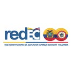 |
Red de Instituciones de Educación Superior Ecuador - Colombia | REDEC | La Red de Instituciones de Educacion Superior de Ecuador y Colombia tiene como fin promover la cooperación entre sus instituciones de los dos países con el fin de propiciar la integración universitaria de los dos países por medio de actividades constantes de investigación, innovación, educación e internacionalización. |
Hernan Giovanny Villarraga Orjuela | hernan.villarraga@ikiam.edu.ec |
| 8 | 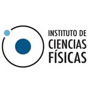 |
DESARROLLO DE PÉPTIDOS ANTIVIRALES Y ANTIMICROBIANOS PARA CEPAS | BUDE PAV-AM | Buscar y desarrollar péptidos y moléculas antimicrobianas con actividad en microorganismos multiresistentes a antibióticos comerciales, asi como agentes antivirales. |
José Rafael de Almeida | rafael.dealmeida@ikiam.edu.ec |
| 9 | 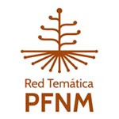 |
Red Temática Productos Forestales No Maderables | Red Temática Productos Forestales No Maderables | Promover el estudio integral y el aprovechamiento sostenible de los Productos Forestales No Maderables, mediante la investigación etnobiológica y la colaboración con sociedades rurales organizadas. |
Montserrat Rios | montserrat.rios@ikiam.edu.ec |
| 10 | 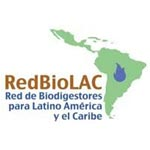 |
Red de Biodigestores de LatinoAmerica y Caribe | RedBioLAC | La visión de la RedBioLAC es ser la organización de referencia en la investigación, desarrollo, implementación y difusión de biodigestores para estimular el manejo adecuado de los recursos naturales y promover el bienestar socioeconómico de Latinoamérica y el Caribe.La misión es ser una red que aglutina a las instituciones relacionadas con la investigación aplicada y en la difusión de la biodigestion anaeróbica para estimular el tratamiento integral y el manejo de los residuos orgánicos, como estrategias para mejorar el bienestar de la población de Latinoamérica y el Caribe. |
Jaime Martí Herrero | jaime.marti@ikiam.edu.ec |
| 11 | 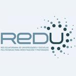 |
Red Ecuatoriana de Universidades para Investigación y Postgrados | REDU | La REDU tiene como objetivo general el promover programas, proyectos y actividades académicas interinstitucionales, mediante el intercambio de experiencias, estableciendo mecanismos de comunicación y gestión compartida de recursos para contribuir al desarrollo de la educación superior y del país. |
Pablo Jarrín | pablo.jarrin@ikiam.edu.ec |
| 12 | 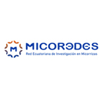 |
Red Ecuatoriana de investigación en Micorrizas | MicoR3des | MicoR3des nace el 15 de agosto del año 2019, una vez que se aprueba en la convocatoria XII CEPRA-2019 el Proyecto en Red: Descubriendo la diversidad de hongos micorrízicos arbusculares autóctonos asociados a cacao (Theobroma cacao), cedro (Cedrela montana) y guayusa (Ilex guayusa): un primer paso hacia la obtención de biofertilizantes y el desarrollo sustentable de la agroforestería. Los ojetivos son: • Impulsar la cultura de investigación básica y aplicada sobre hongos formadores de micorrizas, sus simbiosis mutualistas con plantas de interés agrícola, agroforestal y ornamental, y su importancia en los ciclos biogeoquímicos y el cambio global. • Crear vínculos con grupos de investigación consolidados a nivel nacional e internacional para fortalecer la investigación científica en los distintos ámbitos de estudio de la interacción biológica entre los hongos formadores de micorrizas y las plantas. • Desarrollar espacios de discusión crítica que genere innovaciones biotecnológicas transferibles al sector agroproductivo del Ecuador, contribuyendo a la seguridad y soberanía alimentaria. • Promover la difusión y divulgación sobre micorrizas a través de medios de comunicación masiva, desarrollo de eventos científicos y futura Editorial “Simbiosis Científica MicoR3des”. • Lograr que MicoR3des sea reconocida a nivel nacional e internacional por su liderazgo en las investigaciones en hongos formadores de micorrizas y sus simbiosis con las plantas. |
Leopoldo Naranjo-Briceño, Ph.D. | leopoldo.naranjo@ikiam.edu.ec |
| 13 | 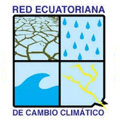 |
Red Ecuatoriana de Cambio Climático | RECC |
Se constituyó en Febrero del 2011 como un Nodo de Universidades para trabajar en temas de Cambio Climático, y en el 2013 se estableció como la RECC con la MISION de: “Compartir conocimientos, experticia e iniciativas de una manera dinámica, para ser un espacio donde los investigadores, educadores y líderes comunitarios en el Ecuador, puedan canalizar sus esfuerzos proponiendo soluciones creativas e innovadoras para enfrentar el Cambio Climático, buscando mejorar la capacidad de adaptación y mitigación al Cambio Climático de nuestra sociedad; e influenciar en la toma de decisiones y la creación de políticas públicas a nivel local, nacional y regional”. Y su VISION es: “Ser un mecanismo científico de articulación, difusión, capacitación, incidencia y posicionamiento del Ecuador frente al Cambio Climático”. |
Rubén Basantes | ruben.basantes@ikiam.edu.ec |
| 14 | 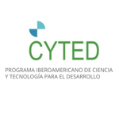 |
Red Iberoamircana de Eficiencia Térmica Industrial | RIETI |
La propuesta plantea la creación de una red la cual permita articular un espació de cooperación iberoamericano que fomente el desarrollo de actividades de transferencia de conocimiento promoción y difusión de la eficiencia energética y su impacto en la reducción de la huella de carbono a nivel industrial; en concordancia a los lineamientos energéticos regionales, contribuyendo de manera sinérgica al proceso de cambio en el comportamiento energético tradicional a un modelo basado en la sostenibilidad. En este sentido se trata de contribuir al desarrollo de conocimiento técnico, buenas prácticas industriales, capacitación e integración Iberoamérica entre los diferentes actores sociales existentes en los diferentes escenarios energéticos ambientales de nuestros países de manera sostenible. Paralelamente, se incentivará la participación activa de todos los miembros de la red promoviendo la creación en conjunto de perfiles de proyectos locales o regionales. |
Yanet Villasana | yanet.villasana@ikiam.edu.ec |
| 15 | 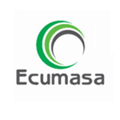 |
Red Ecuatoriana para la Investigación del Aprovechamiento Energético de la Biomasa | Ecumasa | El objetivo principal de la red es consolidar una línea de investigación en el aprovechamiento energético de la biomasa, mediante la articulación de las siguientes acciones: |
Zulay Niño | zulay.nino@ikiam.edu.ec |
| 16 | 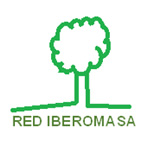 |
Red IBEROMASA | IBEROMASA | IBEROMASA es una red auspiciada por CYTED que involucra a académicos, investigadores, empresas y representantes de las administraciones públicas que estudian el posible uso de la biomasa generada en el medio agroforestal como fuente de energía en Latinoamérica, con el objetivo de orientar mejor las políticas de promoción del uso de este recurso como herramienta de desarrollo dentro de una gestión sostenible. La acción presentada en IBEROMASA tiene por objetivo general desarrollar, mejorar y/o adaptar tecnologías para la utilización eficiente de combustibles biomásicos sólidos para usos térmicos, tanto a nivel doméstico como en pequeñas industrias en zonas rurales y urbanas marginales, que sean viables técnica, económica y socialmente, replicables y que contribuyan de forma directa al desarrollo sostenible, la equidad de género y la protección del medio ambiente de la Región Iberoamericana. |
Zulay Niño | zulay.nino@ikiam.edu.ec |
| 17 | 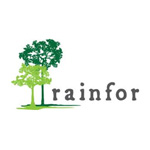 |
Red Amazónica de Inventarios Forestales | RAINFOR | The Amazon Forest Inventory Network is a long-term, international collaboration to understand the dynamics of Amazon ecosystems. Since the turn of the millennium we have jointly developed a framework for systematic monitoring of the forests from the ground-up. This is centred on permanent forest plots that track the behaviour of individual trees and species, and includes extensive collection of soil and plant biogeochemical data, as well as more intensive, high frequency monitoring of carbon cycle processes at key sites. RAINFOR works with partners across the nations of Amazonia, taking account of the modulating role of environmental variables like soil nutrition, and the need to help develop new generations of Amazon ecologists. The work of RAINFOR is currently supported by funding agencies in Brazil, Colombia, the UK, and the EU. |
María Cristina Peñuela | mariacristina.penuela@ikiam.edu.ec |
| 18 | Amazon Tree Diversity network | ATDN | The Amazon Tree Diversity Network is an electronic network of 200 botanists, ecologists and taxonomists that share data and information on tree diversity in the pan-Amazon (Amazonia s.s. and the Guyana Shield). Our drive is to gain a better understanding of the processes that drive (patterns of) alfa- and beta-diversity in the region and, through this knowledge, contribute to better conservation strategies for the region. Currently we work with data from botanical 1-ha plots (and sometimes different sizes), forest inventories, and herbarium collections. |
María Cristina Peñuela | mariacristina.penuela@ikiam.edu.ec | |
| 19 | 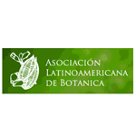 |
Asociación Latinoamericana de Botánica | ALB | La Asociación Latinoamericana de Botanica (ALB) se creó como una respuesta a la imperiosa necesidad de incrementar la comunicación y las relaciones de trabajo entre los botánicos de América Latina. La Asociación ha ofrecido desde el comienzo el marco necesario para la realización de varias acciones: definición de prioridades dentro de la región (tales como la capacitación de jóvenes en un ámbito internacional pero en esencia latinoamericano para responder a las necesidades propias), organización de "grupos de interés", creación de nuevas organizaciones para acometer temas específicos tales como la Asociación Latinoamericana y del Caribe de Jardines Botánicos (ALCJB) y el Grupo Etonobotánico Latinoamericano (GELA) |
María Cristina Peñuela | mariacristina.penuela@ikiam.edu.ec |
| 20 | 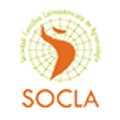 |
Sociedad Científica Latinoamericana de Agroecología | SOCLA | Organización regional dedicada a promover la agroecología desde la investigación- acción y las diferentes formas de conocimiento, como estrategia indispensable para alcanzar la sustentabilidad rural y de los sistemas alimentarios en América Latina. |
María Cristina Peñuela | mariacristina.penuela@ikiam.edu.ec |
| 21 | 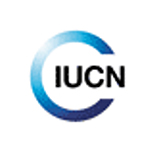 |
Medicinal Plant Specialist Group (MPSG) Species Survival Commission (SSC) of the International Union for Conservation of Nature (IUCN). | IUCN SSC Medicinal Plant Specialist Group | The IUCN SSC Medicinal Plant Specialist Group (MPSG) is a global network of specialists contributing within our own institutions and in our own regions, as well as world-wide, to the conservation and sustainable use of medicinal plants. The MPSG was founded in 1994 to increase global awareness of conservation threats to medicinal plants, and to promote sustainable use and conservation action. |
Montserrat Rios | montserrat.rios@ikiam.edu.ec |
| 22 | 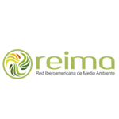 |
Red Iberoamericana de Medio Ambiente | REIMA | Contribuir a la formación ambiental y al desarrollo sustentable en Iberoamérica, apegado a la política ambiental de cada país y a las estrategias gubernamentales, mediante: a) el intercambio de experiencias a través de la realización de proyectos de investigación científica y aplicada y eventos académicos relacionados con la gestión ambiental y el desarrollo sustentable. b) la cooperación individual y colectiva entre instituciones públicas, privadas y demás organizaciones civiles a través de la participación en proyectos de gestión ambiental como contribución al desarrollo sustentable. c) alianzas estratégicas público-privadas que permitan la implementación de programas de educación formal y no formal que fortalezcan la gestión ambiental comunitaria. d) la promoción de buenas prácticas ambientales a través de programas de voluntariado, conforme a la legislación de cada país. |
Jorge Batres | jorge.batres@ikiam.edu.ec |
| 23 | 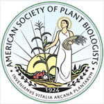 |
American Society of Plant Biologists | ASPB | ASPB is a professional society devoted to advancing plant science research and education. It publishes three world-class journals and organizes conferences, and other educational activities that are key to the advancement of the science. The American Society of Plant Biologists was founded in 1924 to promote the growth and development of plant biology, to encourage and publish research in plant biology, and to promote the interests, growth, and education of plant scientists in general. Over the decades the Society has evolved and expanded to provide a forum for molecular and cellular biology as well as to serve the basic interests of plant science. It publishes the highly cited and respected journals Plant Physiology and The Plant Cell. Membership spans six continents, and our members work in such diverse areas as academia, government laboratories, and industrial and commercial environments. The Society also has a large student membership. ASPB plays a key role in uniting the international plant science disciplines. |
Ery Fukushima | ery.fukushima@ikiam.edu.ec |
| 24 | 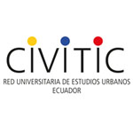 |
Red Universitaria de Estudios Urbanos de Ecuador | CIVITIC | CIVITIC es la Red Universitaria de Estudios Urbanos de Ecuador, creada a partir del evento Hábitat 3 Alternativo, realizado en Quito en octubre de 2016, que convocó a un grupo de especialistas en el ámbito urbano, quienes vieron la necesidad de crear, coordinar y articular espacios alternativos de diálogo antes, durante y después del Hábitat III Oficial. En este marco, CIVITIC se ha propuesto debatir, reflexionar e investigar sobre cuestiones urbanas en Ecuador, desde una perspectiva inter/transdiciplinaria (arquitectura, sociología, política, antropología, economía, entre otras) y comparativa. |
Andrea Jaramillo | andrea.jaramillo@ikiam.edu.ec |